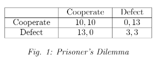
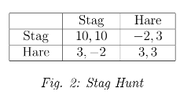
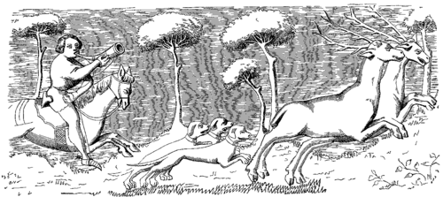
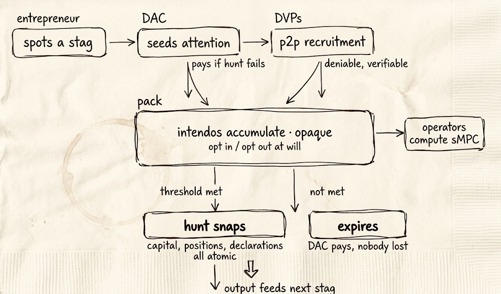

a six pager on coordination markets
Every generation a new social theory offers a fresh "solution" to "society", galvanizing our freshmen and the existentially unmoored. Workers of the world unite, tax the rich, check your privilege. But before we Greta ourselves into the abyss, we should less enthusiastically analyze when and how our current system — capitalism — fails or underperforms: What specifically fails when you give agents the autonomy to gather information, make judgment calls, choose actions, bear consequences?
Oh! you cry, The Prisoner's Dilemma! Aha The Moloch!!
But the games we actually play suggest a different response, one that promises less than social-welfare optimization, but also demands less than rewiring our selfish instincts and slaying the Moloch. Namely, mechanisms for committable and actionable coordination.
Consider Rousseau's stag hunt: Two hunters can collaborate on a stag and eat well, or each hunt a hare and eat for a few hours. Both are better off coordinating on a stag — wherein neither is incentivized to defect! — but moving from hare to stag alone makes you worse off. If they are stuck in a (hare,hare) equilibrium, the challenge is not defection from cooperation rather failure to reach coordination (stag,stag).


If Moloch is the demon of defection, this is a different demon. I call it Azazel — the deity of the wilderness, pre civilization, where humans wander alone and no associations form.
The distinction between Moloch and Azazel matters because these two demons require very different remedies. If you believe society is trapped mostly by Moloch, the natural response is to build central institutions that restrain selfish behavior. Central planning, regulation, social-justice activism, superintelligence singletons. But if the problem is mainly Azazel, the remedy changes — people's behaviour doesn't need to be corrected or coerced, they already want to collaborate. What we lack, in the Azazel-Staghunt framework, is "merely" mechanisms to communicate and bind shared actions.
In short, we need Coordination Markets.
Coordination Markets (CMs) are a category of markets built around binding primitives for coordinated action. These primitives compose, condition on external state, respond dynamically to market activity, and settle atomically.
Improving the internet through better communication channels does not suffice, since cheap talk is non-binding. In many scenarios, moving alone is risky: hunting a stag alone risks hunger and injury, rioting alone against a despot risks death, bootstrapping a liquidity pool alone risks getting eaten alive by arbitrageurs.
The missing layer, therefore, is not communication but binding intents, otherwise known as assurance contracts (Bagnoli and Lipman 1989). An assurance contract is a primitive allowing one to express and enforce conditional commitments of the form "I will do X if N others do X." In our stack, these conditional commitments will be called intendos.
None of this is fundamentally new. PledgeBank ran conditional commitments from 2005, but the binding there was enforced by social pressure in small groups. The Point built assurance contracts in 2007, then pivoted to Groupon. Kickstarter owned assurance contracts for creative projects, but remained niche. Each of these attempts either collapsed into a single vertical or was heavily biased toward petitions and activism, which is an esoteric death sentence.
Instead, we should take a market approach to coordination. A market framing has many implications; three immediate ones: First, endogenous incentives. Participants communicate their intents and commit not merely because they believe in the cause, but also because the mechanism makes commitment individually rational.
Second, a market approach is unopinionated — it should engineer for no specific agenda or world order. Market rails should remain open to whatever coordination problems and causes users initiate. The mechanism should support heterogeneous preferences and risk thresholds, rather than hard-code a single safety threshold. A tenured professor might come out of the closet provided 5 colleagues do so; an assistant professor might require 50; one LP is comfortable with a liquidity bootstrap floor of $1M; another demands $10M.
Third, the mechanism should be able to condition on external state. Conditions should be able to reference on-chain data, real-world events, and other facts verifiable on the web. Intendos should also be able to condition on other intendos, chaining coordination markets into multi-stage sequences.
But before any of that, CMs must allow shielding one's intendo. Even before the move-alone risk, being the first to signal willingness is itself a primary source of risk: revealing one's political preferences in a hostile environment, disclosing one's financial intention in the face of arb bots, exposing a social cause when it is still small and can be killed. Allowing for confidential intents should receive axiomatic treatment.
A social or financial entrepreneur believes she spotted a Stag — a certain opportunity that increases the payoff of its rational participants. She posts a Hunt, and individual users or agents discover it and contemplate. An agent deciding to join signs cryptographically an intent to join — an intendo — conditioned on a sufficient number of others joining too. The signed intendos accumulate and Pack, in an opaque process, during which more agents opt in but also may opt out at will. Once some subset of agents crosses the threshold, satisfying internally the threshold conditions of all of its members, the Hunt snaps and executes together.

Four properties are axiomatic for the core primitive of CMs:
A broad category where CMs have particular utility is escaping network effect traps. Apps that "suck but everyone's using it", or the media platform that's blatantly lying but everyone's watching it. CMs allow the public's true preference to materialize as concrete switching plans — in formal terms, it allows to aggregate demand and to alter the focality.
Example 1: Liquidity migration. Superior DeFi machinery exists but liquidity is stuck on legacy tech, 5.7B$ on BNB for instance. LPs don't move because moving alone means providing liquidity to an empty pool. Utilizing CMs, each LP can set a threshold for migrating — 5M$, 50M, 500M — whatever they need to feel comfortable. Their capital stays productive until a subset's thresholds are met and resolved.
Example 2: Content platform bootstrap. Large segments of users resent the agenda of dominant platforms but face a pure coordination failure: entrepreneurs can't know if the ranting users will actually act, and users can't know if others will follow. CMs make the latent demand legible and binding.
The rewards for the DAC mechanism originate from a social/political/financial entrepreneur willing to fund the fail rewards. Instead of capital buying attention and shaping opinion, influencing public opinion becomes costly only if you fail to shape it. The asymmetry significantly weakens the advantage of capital: a billionaire funding a fringe cause pays when the public doesn't follow, whereas a correct minority rallies the public resource-free.
Attention markets are designed to amplify organic propagation dynamics of some underlying social network. Ideally, coordination initiatives would propagate spontaneously via group chats, community forums, DMs. But whenever we enforce Opaque Accumulation (Axiom 2) we are shielding participants' intendos from their peers, which goes against organic social discoverability.
Can we preserve p2p propagation while maintaining privacy and deniability? Designated Verifiable Proofs (DVPs) to the rescue. DVPs enable off-the-record messaging: they allow a prover to convince a peer, or a set of peers (Multi-DVP / MDVS), that a certain statement is correct whilst maintaining full deniability in case the proof is leaked. In practice this looks like group chat messages that are internally verifiable yet practically unleakable.
Besides attention dynamics, initiators of stags should fund the continuous computation of the state of the pack. The CM stack requires a layer of operators/searchers/solvers continuously checking for subsets of intendos that can be co-satisfied. The funding for this computation can start with the stag entrepreneur — and migrate to a fee model sustained by the pack once it reaches scale.
Revisiting the full lifecycle:

Beyond generic support for market mechanics, the stack requires:
Intendos — the layer aggregating persistent intents of users. Limited implementations exist (CowSwap), but far from the flexibility required for CMs' composability and multiplexing.
An efficient data structure and incremental algorithmic framework to solve Pack states. For a large set of intendos, resolving the state belongs to the class of monotone fixed-point computation, which admits incremental algorithms of time complexity O(polylog) or O(1) amortized. Non-monotone intendos — ones which condition on the Pack not exceeding a certain amount — render the problem NP-hard in the general case and should remain outside what CM rails aspire to support.
A cryptographic protocol supporting opaque accumulation of the pack. The broad family is secure multi-party computation (sMPC), but standard interactive sMPC is incompatible with continuous evaluation over an open permissionless validator set. The mostly-noninteractive alternative is threshold FHE, which distributes a shared public key at the outset and runs a lightweight sMPC for the decryption phase. Feasibility requires deploying mixed-mode, hiding only essential parts — typically less than 5% of a program's logic needs to run in encrypted mode.
Coordination by definition leads to large market moves and cascading effects. Any gap between pack formation and execution increases the manipulation surface. To eliminate or minimize this gap, CMs must run on infrastructure satisfying censorship resistance, permissionlessness, and fairness in real time — what I call real-time decentralization (RTD).
In democratic ages, the bonds of human affection are extended, but relaxed (de Tocqueville). The internet, the ultimate egalitarian project, allowed us to connect with complete anons and discover shared ideas and interests. But it did not offer ways to move together and act on common interests. It is missing an association layer which grants dynamic, ephemeral, or context-specific communities 'write' permissions to the shared state of the digital space.
Project Staghunt aims to build it.